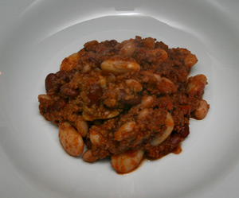

Alle Rezepte

Foto vom Abend
Gekocht am Montag, 3. März 2008
Montagsplausch Nr. 220. Der Abend hiess «Vigneto Campe'».
- Wetter
- Regnerisch
- Getränke
- Il Pollenza, Brianello Marche, IGT 2005
- Herdade da Malhadinha Nova, 2005
- Vürsù Vigneto Campé, La Spinetta, Barolo, 2001
- Am Tisch
- Claudia und Felix, Rapfi, Gäbi und Beni
- Dazu gab es